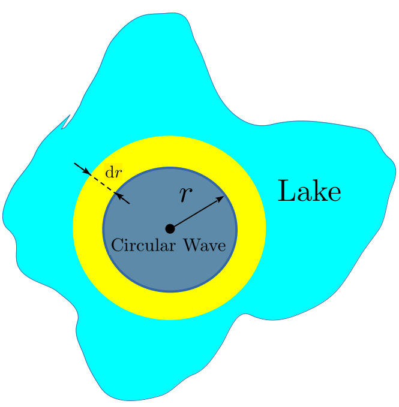
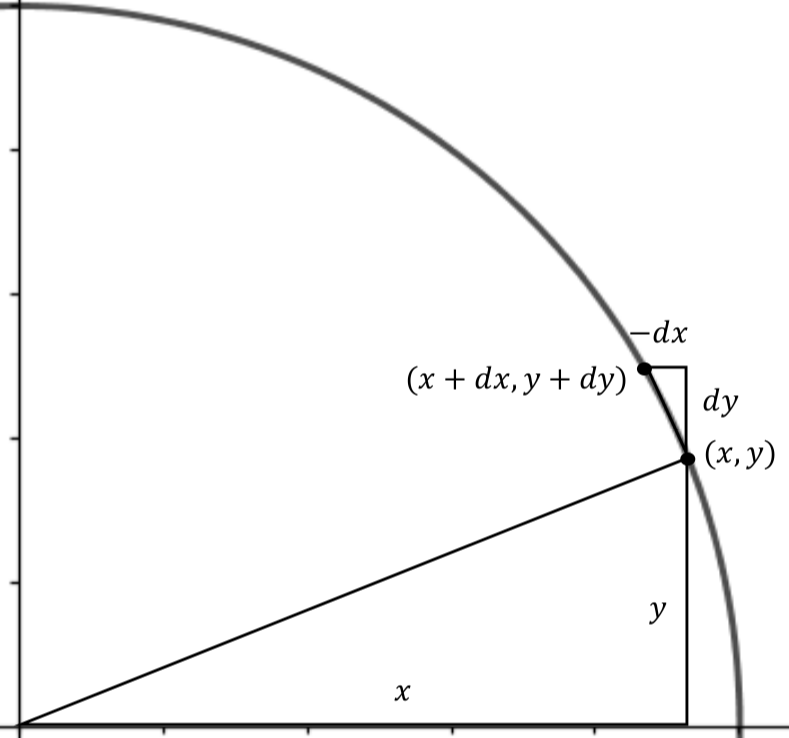

. . . mathematical analysis is to the technical man merely a tool or instrument for doing his work, of which he must have not only the knowledge and understanding but also the expertness which he has with other tools.
The General Differentiation Rules are surprisingly easy to learn and remember. Moreover, despite the fact that we have six entries in our table there are really only three rules. The Constant Rule, The Sum Rule, and the Product Rule are fundamental. The other three, The Constant Multiple Rule, The Power Rule, and the Quotient Rule are straightforward consequences of the first three. We only state them separately for convenience.
We call these rules “general” because each one of them can be applied to a wide variety of expressions. In addition to the general rules there is a large set of specific rules that only apply to specific functions. We will come back to these beginning in Chapter 6
To begin, suppose a point is moving along the \(x\)-axis. As in Chapters 2and 3 when we think of a point in motion we write \(x(t)\) to express the idea that the position \(x\text{,}\) depends on the time, \(t\text{.}\) At a specific time, \(t_1\text{,}\) the position \(x(t_1)\text{,}\) is expressed more compactly as \(x_1\) and at time \(t_2\) the position is \(x_2\text{..}\)
The (small, finite) change in \(x\) is the difference between \(x_2\) and \(x_1\text{:}\)\(x_2-x_1\text{,}\) and the (small, finite) change in \(t\) is the difference between \(t_2\) and \(t_1:\)\(t_2-t_1\text{.}\)
It is customary to denote these small, finite changes with the notation:
\begin{equation*}
\Delta x = x_2-x_1, \text{ and } \Delta t= t_2-t_1.
\end{equation*}
We will denote infinitely small changes in \(x\) and \(t\) as \(\dx{x}\) and \(\dx{t}\text{.}\) The symbol \(\dx{x}\) is called the differential of \(x\text{.}\)
Notationally, the distinction between \(\Delta x\) and \(\dx{x}\) is small, but conceptually it is profound. When we write \(\Delta x\) there is some measurable distance between \(x_2\) and \(x_1.\) When we write \(\dx{x}\) the distance between \(x_2\) and \(x_1\) is immeasurably (infinitesimally) small.
If \(x\) is changing in time, \(\dx{x}\) represents how much \(x\) changes in an infinitesimally small increment of time \(\dx{t}\text{.}\) If the concept of an infinitely small increment troubles you (it should) it is safe, for now, to think of \(\dx{x}\) as a very, very, very, small change in \(x\text{.}\)
In general, if two variables, say \(x\) and \(y\text{,}\) are related we will be interested in asking (and answering) the question: If \(x\) is incremented by \(\dx{x}\) how will \(y\) be affected?
Subsection4.3.1The Constant Rule
Now that we understand our notation the first differentiation rule is quite obvious. In fact, it is the same whether we are thinking of a small finite change or of a differential. If \(x\) is unchanging, if it is not moving, then “the (infinitesimal) change in \(x\)” between two different times is zero. It doesn’t really matter whether we are talking about a finite \(\Delta x\) or an infinitesimal \(\dx{x}\text{.}\) Both are zero because \(x\) doesn’t change. Thus we have the following rule:
In Table 4.2.1 we stated the Constant Rule using \(a\) as the constant, in Logarithm Property 4.3.1 we used \(x\text{,}\) and in Problem 4.3.2 we used \(y\text{.}\) Does it matter what symbol we use? Explain.
Subsection4.3.2The Sum Rule
The Constant Rule 4.3.1 was particularly simple since only one quantity was involved and it was unchanging. The second is only slightly more complex.
Logarithm Property4.3.4.The Sum Rule.
\(\dx(x+y)=\dx{x}+\dx{y}.\)
Ad Hoc Proof.
If \(\textcolor{red}{x_1}\) and \(\textcolor{red}{x_2}\) are infinitely close together, then \(\textcolor{red}{\dx{x}} = \textcolor{red}{x_2}-\textcolor{red}{x_1}.\) Similarly if \(\textcolor{blue}{y_1}\) and \(\textcolor{blue}{y_2}\) are infinitely close together then \(\textcolor{blue}{\dx{y}}=\textcolor{blue}{y_2}-\textcolor{blue}{y_1}.\) Then:
Notice that like the Constant Rule, the Sum Rule is true regardless of whether we are talking about finite differences or differentials.
The Sum Rule is stated as if it only applies to the sum of two quantities. This is typical of mathematical writing. We tend to be minimalists so we don’t state more than we absolutely have to. However, if the Sum Rule applies to the sum of two quantities it is straightforward to show that it also applies in the obvious fashion to a sum of three, four, or more quantities.
Problem4.3.5.
(a)
Show that \(\dx(x+(y+z))=\dx{x}+\dx{y}+\dx{z}\)
Hint.
Notice how we placed the parentheses.
(b)
Show that \(\dx(x+y+z+w)=\dx{x}+\dx{y}+\dx{z}+\dx{w}\)
Suppose \(a\) is a constant and \(x\) is a variable. Since \(\dx{(ax)}= ax_2-ax_1\) is the differential between infinitely close values of \(ax\) we see that the differential of \(ax\) is given by:
To get a sense of how we will be using differentials consider the line which is the graph of the equation \(3x+2y=5\text{.}\) Let’s differentiate both sides of this formula using the tools we have so far. Obviously if two quantities are equal then their differentials are also equal. So,
Notice that equation (4.3) can be rearranged as follows: \(\dfdx{y}{x} = -\frac32. \) So it appears that the differential ratio \(\dfdx{y}{x}\) is the slope of our line. This makes sense since \(\dfdx{y}{x}\) is the (infinitesimal) change in \(y\) divided by the (infinitesimal) change in \(x\text{.}\) From your study of lines in Algebra you know that the change in \(y\) divided by the change in \(x\) is the definition of slope. It continues to be the slope even if the changes in \(x\) and \(y\) are infinitesimal.
Problem4.3.8.
Compute \(\dx{y}\) for each of the following:
\(\displaystyle y-x=0\)
\(\displaystyle y-x=5\)
\(\displaystyle y-2x=7\)
\(\displaystyle 20x-y=-1\)
\(\displaystyle y=0.0002x\)
\(\displaystyle \frac{y}{x}=\pi\)
\(\displaystyle y=3+2x\)
\(\displaystyle \frac{7-\pi y}{x}= 17\)
\(\displaystyle y=\sqrt{2}x\)
\(\displaystyle y=(\pi+\sqrt{2})x\)
\(\displaystyle y=\pi x+\sqrt{2}x\)
\(\displaystyle y=\dfrac{(\pi+\sqrt{2})x}{x}\)
\(\displaystyle y=\dfrac{(1-x)x^4}{x^3-x^4}\)
In his \(1684\) paper on Calculus, Leibniz presented all of the General Differentiation Rules with no justification whatsoever, stating simply that
“The demonstration of all this will be easy to one who is experienced in these matters . . .”
Our first three rules seem to bear this out. They are really the same as the analogous rules for finite differences. His claim is a bit more suspect for the next differentiation rule.
Subsection4.3.4The Product Rule
Logarithm Property4.3.9.The Product Rule.
\(\dx{(xy)}=x\dx{y}+y\dx{x}.\)
Ad Hoc Proof.
Think of the product \(xy\) as the (A)rea of the rectangle with sides of length \(x\) and \(y\) so that \(A=xy\text{,}\) as shown in the following sketch.
If we increase the sides by \(\dx{x}\) and \(\dx{y}\text{,}\) respectively, then the area will change by an infinitesimal amount \(\dx{A}\) which is the sum of areas of the blue, yellow, and red regions shown in the sketch. The area of the blue region is \(x\dx{y}\text{,}\) the area of the red region is \(y\dx{x}\) and the area of the yellow region is \(\dx{x}\dx{y}\text{.}\) Since \(\dx{A}\) is the sum of these three regions we have
But remember that \(\dx{x}\) and \(\dx{y}\) represent infinitely small changes. Thus, their product \(\dx{x}\dx{y}\) is even more infinitely small than they are. (Quadratically infinitely small?)
In fact, the product \(\dx{x}\dx{y}\) is so small compared to any of the other terms in Equation (4.4) that it simply doesn’t matter. So we will ignore it.
This leaves us with \(\dx{A}=\dx(xy)=x\dx{y}+y\dx{x}\) verifying the Product Rule.
You should feel at least a little uncomfortable with the logical sleight of hand in our ad hoc proof of The Product Rule 4.3.9. Some questions present themselves immediately: How can we choose not to ignore infinitesimals like \(\dx{x}\) and \(\dx{y}\text{,}\) but then choose to ignore their product \(\dx{x}\dx{y}\text{?}\) What happens if \(x\) or \(y\) is negative? What happens if \(\dx{x}\) or \(\dx{y}\) is negative?
Perhaps Leibniz left out the demonstrations (proofs) of his rules because he knew they would be controversial. However, he was not lying when he said that those familiar with infinitesimals would understand. Newton also ignored products of infinitesimals in his version of Calculus. As we discussed in Section 4.1, it took mathematicians some \(200\) years to sort this out. We will begin to address this problem in the Chapter 13. For now, we will simply accept that the Product Rule works as we’ve stated it knowing full well that we are on shaky ground that will eventually need to be firmed up.
Problem4.3.10.
Use the Product Rule to show that if \(y=x^2\text{,}\) then \(\dx{y}=2x\dx{x}\text{.}\)
Even though they could not fully explain their methods, both Newton and Leibniz could see that their methods gave answers that made sense physically and which agreed with the results of their predecessors. That is, their methods worked.
For example, in Problem 3.4.10 you used Fermat’s method for tangents to show that at the point \((1,1)\) the slope of the curve \(y=x^2\) is \(2\) and that at the point \((-2,4)\) the slope of the curve is \(-4\text{.}\) Recall from Example 4.3.7 that the differential ratio \(\dfdx{y}{x}\) represents the slope of the curve. With this in mind we rewrite the formula \(\dx{y}=2x\dx{x}\) from Problem 4.3.10 as \(\dfdx{y}{x}=2x\text{,}\) from which we see that the Product Rule easily recovers Fermat’s results.
But what can it mean to say that the slope of the graph of \(y=x^2\) is \(2x\text{?}\) The expression \(2x\) changes with \(x\) but slope is supposed to be constant isn’t it? Moreover, slopes have always been associated with straight lines in the past, but there is not a straight line to be seen anywhere in this problem.
Or is there?
The notion of a differential is essentially an extension of the following observation: If you look very closely at a curve it looks like a straight line. You can confirm this with any graphing technology. Graph a curve and zoom in repeatedly at any point on the curve. Eventually the curve will look like a straight line, and the slope of that line will be the value of \(\dfdx{y}{x}\) at that point. If we extend this observation to the infinitely small scale we get differentials.
The idea that at the infinitely small scale lines and curves are indistinguishable is known as the Principal of Local Linearity, and it is a fundamental principle underlying all of Calculus. We will formally define the Principle of Local Linearity in Section 5.2. For now, the informal idea is that when you look at a very small section of a curve it looks like a straight line. When we choose to simply ignore the term \(\dx{x}\dx{y}\) in our development of the Product Rule we are invoking the Principle of Local Linearity
Again, Newton and Leibniz relied on the fact that their methods produced solutions that made sense physically and which agreed with known solutions to old problems. Snell’s Law is an example of the latter. The following problem is an example of the former.
Problem4.3.11.
When a rock is tossed into a quiet lake it generates an expanding, circular wave, as in the diagram below.

The area enclosed by the wave at any time is given by the formula: \(A=\pi r^2\text{,}\) where \(r\) is the expanding radius of the circle. As time advances the radius of the circular wave expands and, as a consequence, the area enclosed by the wave also grows.
(a)
Use the Constant Multiple Rule and the Product Rule to show that \(\dx{A}=\dx(\pi r^2)=2\pi r\dx{r}.\)
(b)
Explain why be the area of the yellow ring in the diagram is also equal to \(\dx{A}\text{.}\)
(c)
Find \(\dx{A}\) by cutting the yellow region at the dotted line, reshaping the ring into a rectangle. How does this compare with what we obtained using our Calculus rules. Do you see any logical issues with this solution? Specifically, why is it important that \(\dx{r}\) must be infinitely small?
DIGRESSION: Differential Notation.
We will pause here for a moment to take explicit notice of the notational convenience we used in part (a) of Problem 4.3.11 because it will be useful later. We have used the expression \(\dx{x}\) to represent an infinitesimal displacement of \(x\text{,}\) but it will be useful to think of the “\(\dx{ }\)” as meaningful in itself. That is, in the expression \(\dx(\pi
r^2)\) we think of the “d” as “operating on” the expression \(\pi r^2.\) Thus when \(\dx{}\) “operates on” the expression \(\pi r^2\) it returns the expression \(2\pi r\dx{r}\) and we have \(\dx{A}=\dx(\pi r^2) = 2\pi r \dx{r}.\) This is actually consistent with our previous usage if we think of \(\dx(A)\) as “operating on” the area \(A\) and returning the differential \(\dx{A}.\)
This is akin to the way we think about the square root symbol. The symbol \(\sqrt{\phantom{4}}\) “operates on” the expression underneath it so we have \(\sqrt{4}=2.\) Just as \(\sqrt{\phantom{4}}\) is always reserved for the square root of some quantity, \(\dx{}\) is always reserved for the differential of some quantity. In both cases the quantity needs to be named. It is as meaningless to write \(\pi r^2\dx{}\) as it is to write \(\pi r^2\sqrt{\phantom{4}}.\) It is important to use the notation as it was designed to be used.
Also, notice that on the left side of \(\dx{A}=\dx(\pi
r^2) = 2\pi r \dx{r}\) we have the infinitesimal quantity, \(\dx{A}\text{.}\) Since the two sides of the equation are equal it follows that the quantity on the right side is also an infinitesimal. The obvious conclusion is that the ordinary real number \(2\pi r\) multiplied by the infinitesimal \(\dx{r}\) must result in an infinitesimal quantity. Dividing both sides by \(\dx{r}\) we have \(\dfdx{A}{r}=2\pi r\text{,}\) which seems to indicate that the quotient of two differentials will be an ordinary real number. Does this make intuitive sense to you?
Notice that we asked if it makes intuitive sense. When working with differentials it frequently happens that a statement feels right (makes intuitive sense) but begins to fall apart when examined more carefully.
END OF DIGRESSION
Drill4.3.12.
We mentioned earlier that the Constant Rule, the Sum Rule, and the Product Rule are fundamental, and that the other three can be proved using these three. Show that the Constant Multiple Rule follows from the Constant Rule and the Product Rule.
Subsection4.3.5The Power Rule
The simplest version of is the Power Rule is really just repeated use of Fact 4.3.9. We will develop this simple version via Problems 4.3.13 and Problem 4.3.14 below.
The Product Rule requires two factors. But we have three: \(x\text{,}\)\(y\text{,}\) and \(z\text{.}\) We can fix this with the substitution \(\alpha=yz\text{.}\) Then \(\dx{(xyz)}=\dx{(x\alpha)}.\) Now use the Product Rule.
(b)
Emulate the computations in part 4.3.14.a to show that.
Equation (4.5) is called the Power Rule for Positive Integers.
Let’s try out our differentiation rules on a relatively simple example. We will include every single step so that you can see how the differentiation rules are used in concert.
Did you notice that the differential \(\dx{x}\) appeared in every term allowing us to factor it out at the end? This will always happen when there is only one independent variable involved (\(x\) in this case). So it provides an easy way to check your computations. If you end with an expression where the differential of the independent variable cannot be factored out then you have made a mistake in your computations. You should find your mistake before going on. Or just begin again.
As you become more skilled you will probably do many of the steps from Example 4.3.15 in your head. But for now, notice how the rules work together and are applied as they are needed.
Example4.3.16.
Here is another example without all the details spelled out. Make sure you see which rule is being invoked at each step.
\(\dx( {a} _ {0} + {a} _ {1} x+ {a} _ {2} {x} ^ {2} + {a} _
{3} {x} ^ {3} +\ldots+ {a} _ {n} {x} ^ {n} )\) Assume that \(a_0, a_1, \ldots,\) and \(a_n\) are all constant.
\(\displaystyle \dx{(x^4(3x^2-2x+45))}\)
Drill4.3.20.
Compute \(\dx{y}\) for each of the following:
\(\displaystyle y=4.9x^2+15x+6\)
\(\displaystyle y=3.14\)
\(\displaystyle y=3.1416\)
\(\displaystyle y=\pi\)
\(\displaystyle y=x^2-2x+4\)
\(\displaystyle y=3(x^3-4x+2)\)
\(\displaystyle y=\frac{7x^5-3x^3+x^2}{x}\)
\(\displaystyle y=5x^2+2x-3\)
\(\displaystyle x^2-y^2=1\)
\(\displaystyle x^2+y^2+z^2=1\)
\(\displaystyle xy^2=z^3\)
\(\displaystyle xyz=2\)
Example4.3.21.

Figure4.3.22.
Differentiating both sides of an ordinary algebraic equation yields a Differential Equation — an equation which relates the differentials of the quantities involved. For example, suppose we have a point \((x,y)\) lying on the unit circle so that the quantities \(x\) and \(y\) are related by the equation \(x^2+y^2=1\text{.}\)
Differentiating, we have the differential equation
\begin{align}
2x\dx{x}+2y\dx{y}\amp =0 \text{ or }\notag\\
y\dx{y}\amp =-x\dx{x}.\tag{4.6}
\end{align}
Let’s look at this geometrically and focus on the first quadrant. The sketch above shows what happens to the quantities \(x\) and \(y\) as the point changes its position on the circle.
The smaller triangle is called a differential triangle and it is infinitely small. Differential triangles were a favorite tool of Leibniz. He assumed without justification (as we will, for now) that they are just like ordinary (finite) triangles.
Notice that \(\dx{x}\) is negative since the \(x\) coordinate is moving to the left, and that \(\dx{y}\) is positive since the \(y\) coordinate is moving upward. We need positive quantities to represent the length of the triangle’s legs. Therefore we use \(-\dx{x}\) to represent a positive length for the horizontal leg of our differential triangle.
A little more mysterious is the (correct) observation that the smaller triangle isn’t really a triangle at all. Because it is part of the circle the line connecting \((x,y)\) and \((x+\dx{x},
y+\dx{y})\) — the hypotenuse of the triangle — is curved. But there is nothing lost by thinking of the hypotenuse as a straight line because according to the Principle of Local Linearity at an infinitely small scale lines and curves are indistinguishable. At least in part, this why Newton, Leibniz, and their contemporaries worked with differentials. At that scale they could replace curves with straight lines.
Problem4.3.23.
(a)
Show that the two triangles in Figure 4.3.22 are similar. Use this to show that
Notice that this problem specifically asks you to use the triangles, not differentiation to show that \(y\dx{y}=-x\dx{x}.\)
(b)
After Problem 4.3.10 we observed that the ratio \(\dfdx{y}{x}\) must represent the slope of both the curve and its tangent line at a given point. Notice that the differential equation for the circle can be written as
Brute force works but expanding an expression like \((x^2+x)^3\) is dull (and error prone) and mathematicians are like Nature: We are lazy. We’d really rather avoid doing all of that dull computation if we possibly can. Wouldn’t you?
Suppose, we make this problem a little “easier on the eyes” with a substitution like we did in Section 2.2. Let \(z=x^2+x\text{.}\) Then our original problem becomes \(y=5z^3\) which is much easier to look at. And now \(\dx{y}=15z^2\dx{z}\text{.}\) Substituting \(x^2+x\) back in for \(z\) we get \(\dx y = 15(x^2+x)^2\dx (x^2+x).\) After computing \(\dx (x^2+x) = (2x+1)\dx x\) we see that
\begin{equation*}
\dx y = 15(x^2+x)^2(2x+1)\dx x.
\end{equation*}
Problem4.3.25.
(a)
Complete Example 4.3.24 by showing that we get the same \(\dx{y}\) both ways.
(b)
Compute \(\dx{y}\) if \(y=5(x^2+x)^{30}\) and then solve the equation \(\dx y=0\) for \(x\text{.}\)
Comment4.3.26.
Problem 4.3.25 is completely contrived. There is no obvious reason that we would want or need to solve this equation. However, in the near future this will be the next step in many of the problems we will encounter.
Example4.3.27.Making Things “Easier on the Eyes”.
Suppose we wish to find \(\dx{y}\) when \(y=(x+2)^2(2x-3)^3\) Once again we could just apply brute force by multiplying out the expression \((x+2)^2(2x-3)^3.\) But this is a lot of work and it is very error prone.
Instead notice that \(y\) is the product of \((x+2)^2\) and \((2x-3)^3,\) so the Product Rule seems a likely place to begin. But first we make it “easier on the eyes” with the substitutions, \(z=x+2\text{,}\) and \(w=2x-3\text{.}\) Thus:
Not only does this involve considerably less Algebra (and is thus less prone to error) it also gives us \(\dx{y}\) in a form that is easy to factor. This is important because, as we mentioned in Comment 4.3.26, many of the problems to come will involve finding a differential, setting it equal to zero, and then solving the resulting equation. If we had computed this by brute force we would have to find the roots of a fully expanded fourth degree polynomial. That would be hard. The form given above is much easier to work with. Let’s go ahead and set \(\dx{y}=0\) and solve the resulting equation:
The prospects for solving the equation, even in this form seem pretty glum at first, but it really isn’t so bad once we notice that \(\textcolor{red}{(x+2)}\) and \(\textcolor{blue}{(2x-3)^2}\) appear as factors in both terms on the left hand side. Factoring these out gives
Compute the differential of \(y=(x^2-4)^3(x^2+3)^5\) and solve \(\dx{y}=0\) for \(x\text{.}\)
As you become more comfortable using these differentiation rules together, you will probably do many of the steps in a long differentiation more informally, perhaps even in your head. However, most of the time differentiation will only be one part of much larger problems. If you don’t differentiate correctly whatever you do after that is wasted time and effort. It is better to proceed slowly to be sure you are right. If it helps to write out each step in detail then you should certainly do that.
Example4.3.30.
At this point we can find the differentials of a large number of algebraic expressions. But not all. For example suppose \(y=\sqrt{x}.\) Nothing we’ve done so far tells us what \(\dx{y}\) is.
However, you are surely aware that the radical symbol, \(\sqrt{\phantom{4} }\text{,}\) can be expressed as a fractional exponent. For example, \(\sqrt{x} =x^{\frac12}.\) It is tempting to simply assert that, by the Power Rule,
In fact this is true, but it doesn’t follow from the way we have developed the Power Rule because we depended quite explicitly on the assumption that the exponent of \(x^n\) is a positive integer.
Here’s one way to prove that the Power Rule works when \(n=1/2\text{.}\) If \(y=\sqrt{x}\) then \(y^2=x.\) Computing the differential of both sides gives:
or \(\dx{y} =\frac{1}{2}{x^{1/2-1}} \dx{x}\) which is the Power Rule with \(n=\frac12\text{.}\)
Example 4.3.30 is more important than it appears to be. What it shows is that the Power Rule can be extended to include at least the case where the exponent is \(1/2\text{.}\) In fact, the Power Rule is easily extended to allow the exponent to be any positive fraction, say \(2/3\) for example.
Example4.3.31.
You should be a little bit surprised at this. After all, \(y=x^{2/3}\) is a complicated thing, compared to \(y=x^2\text{,}\) or even \(y=x^{1/3}\text{.}\) Nevertheless, essentially the same procedure works here too. If \(y=x^{2/3}\text{,}\) then \(y^3=x^2\text{.}\) Differentiating both sides gives
This is not yet recognizable as the Power Rule primarily because we need to express the right side entirely in terms of \(x\text{.}\) But recall that \(y=x^{2/3}\) so that \(y^2=x^{4/3}\text{.}\) Making that substitution gives
Problem4.3.32.The Power Rule for Positive, Rational Powers.
(a)
Mimic the process in Example 4.3.30 and Example 4.3.31 to show that \(\dx\left(\sqrt[3]{x^4}\right)=\frac43x^{\frac13}\dx{x}.\)
(b)
Now suppose \(y=x^{\frac{p}{q}},\) where \(p\) and \(q\) are positive integers and show that \(\dx\left( x^{\frac{p}{q}}\right)=\frac{p}{q} x^{\frac{p}{q}-1}
\dx x.\)
Example4.3.33.
Having seen that the Power Rule can be extended to include positive, fractional exponents it is natural to ask if it can be extended to negative exponents Can we find the differential of \(y=1/x = \inverse{x}\text{?}\)
Of course we can. If \(y=1/x\) then \(xy=1.\) By the Product Rule we have
Let \(r\) be a positive rational number and \(y=x^{-r}=1/x^r\text{.}\) As in Example 4.3.33 clear the fraction and use the Product Rule to obtain the Power Rule for negative rational numbers:
Thus we see that the Power Rule holds for any rational number, positive or negative, which gives us the following.
The Power Rule for Positive, Rational Powers: Let \(p,\) and \(q\) be any integers, positive or negative, with \(q\neq0\text{.}\) Then \(\dx\left(x^{\frac{p}{q}}\right)=\frac{p}{q}x^{\frac{p}{q}-1}\dx{x}\text{.}\)
In the title of his \(1684\) paper Leibniz claimed that his Calculus Differentialis was “. . . Impeded Neither by Fractional nor Irrational Quantities, . . .” But notice that nothing we’ve done so far allows us to find \(\dx{y}\) if say \(y=x^{\sqrt{2}}\text{.}\) This is because \(\sqrt{2}\) is irrational and cannot be represented as a fraction. We have extended the Power Rule to the case where this exponent is any rational number, but we have not addressed the case when the exponent is irrational.
Comment4.3.36.
Having an irrational exponent is a bigger problem than it seems to be. We have no way (so far) to interpret the meaning of an expression like \(x^{\sqrt{2}}\text{.}\) So trying to find its differential using the techniques we have is hopeless. Take a moment to consider what an expression like \(x^{\sqrt{2}}\) could even mean.
In Section 8.3 we will find two different ways to assign meaning to \(x^{\alpha }\) when \(\alpha{}\) is irrational. (Actually, we will invent a way. Meaning is not something we find, it is something we create.) When we do we will find that the Power Rule still works. In the meantime, we will assume for now that the Power Rule always works, even when the exponent is irrational.
We can now differentiate some pretty complicated expressions. Frequently an appropriate substitution will make this “easier on the eyes”, but otherwise at each step we only need to invoke one of the General Differentiation Rules. When the expression is complicated the key is to be methodical and do one step at a time even if you are doing some of them in your head.
Example4.3.38.
To differentiate \(\left(
\sqrt{x^2-2}
\right)
\left(
\sqrt{x}-2\right)\) we begin by re-expressing the radicals as exponents because we have no differentiation rules for radicals.
Be sure you can follow all the computations at each step in Example 4.3.38. You may want to make some substitutions as you go. With practice, you will be able to do most of this in your head.
\(c^2t^2-x^2-y^2-z^2=0\text{,}\) where \(c\) is a constant 16
If \(x\text{,}\)\(y\text{,}\) and \(z\) are spatial coordinates, \(t\) is time, and the constant \(c\) is the speed of light then the expression on the left-hand side represents the square of the distance between the origin and the point \((x,y,z,t)\) in \(4\) dimensional, relativistic, spacetime. Setting this equal to zero allows us to identify all of the events that an observer at the origin is observing at a given instant. For example, if there is a solar flare happening on the sun \(93\) million miles away from the earth, then we observe it \(8\) minutes later. The spacetime distance is zero to allow for the simultaneity of the event happening and us observing it. The closest galaxy to the Milky Way Galaxy is the Andromeda Galaxy which is approximately \(2.5\) million light-years away. This means that the light we are observing now originated 2.5 million years ago but the spacetime distance between the two events (called the Minkowski distance) is still zero.
.
In most parts of Problem 4.3.43\(y\) is given explicitly in terms of \(x\text{.}\) But in Part 4.3.43.j\(y\) is given implicitly. We’ve seen this before. Almost everyone’s first impulse in this situation is to try to solve explicitly for \(y\) and then differentiate, but solving for \(y\) isn’t necessary, it isn’t always possible, and even when it is possible it is often harder that simply differentiating the formula we’re given. Our differentiation rules remain unchanged. After completing the differentiation we simply need to solve for \(\dx{y}\text{.}\)
Example4.3.44.
For example, how can we compute \(\dx{y}\) given that
It is possible to solve equation (4.11) explicitly for \(y\) in terms of \(x\) but it is difficult to do. Since equation (4.11) is quadratic in \(y\) (the highest power of \(y\) is \(2\)) we need only use the Quadratic Formula to get \(y\) explicitly in terms of \(x\) and \(z\) and then differentiate. Try that some time when you have time to kill. Lots of time.
Instead, we’ll just apply our differentiation rules to equation (4.11) as it is. Differentiating we have
At first this may look very difficult to solve for \(\dx{y}\) but look again. This differential equation is actually linear in each of the differentials, \(\dx{x}\text{,}\)\(\dx{y}\text{,}\) and \(\dx{z}\text{.}\) That is, each differential only appears raised to the first power. This will always happen. When we differentiate any expression the result will always be linear in the differentials involved.
The word “linear” has a very specific meaning in mathematics, but the precise definition isn’t relevant at the moment. For our current purpose it simply means that we can rearrange our equation algebraically so that it has the following form.
\begin{equation*}
(\text{stuff})\dx{y} = (\text{more stuff})\dx{x} + (\text{even
more stuff})\dx{z}.
\end{equation*}
Solving for \(\dx{y}\) gives
\begin{equation*}
\dx{y} = \frac{(\text{more stuff})\dx{x} + (\text{even
more stuff})\dx{z}}{(\text{stuff})}.
\end{equation*}
which may be preferable depending on the next step if this is a part of a larger problem.
Some problems are legitimately hard, and some only look hard. So remember that as bleak as things may look sometimes, you should always keep your goal in view. In this case we were trying to isolate \(\dx{y}\text{,}\) so we gathered all of the terms that had \(\dx{y}\) in them, put all the other terms on the other side of the equation, factored out the \(\dx{y}\) and divided by the “stuff” that formed the coefficient of \(\dx{y}\text{.}\) This process is often easier than trying to solve for \(y\) before differentiating.
Suppose we wish to find \(\dx{y}\) when \(y= \frac{2-3x^2}{\sqrt{x}}\text{.}\) Rewriting this slightly we have \(y=
\frac{2-3x^2}{\sqrt{x}} = x^{-\frac12}\left(2-3x^2\right) =
2x^{-\frac12}-3x^{\frac32}\text{.}\) Thus
Now suppose we have \(z=\frac{1}{y}=\frac{\sqrt{x}}{2-3x^2}\text{.}\) Can we compute \(\dx{z}\text{?}\)
There are actually two different approaches to this problem that use the Product Rule. The first is to rewrite \(z\) as \(x^{\frac12}\inverse{(2-3x^2)}\) then apply the Product Rule followed by the Power Rule.
The second approach is to clear the fraction so that \(z(2-3x^2)=\sqrt{x}\text{.}\) From here we can compute the differential of both sides (using the Product Rule on the left side) and solve the result for \(\dx{z}.\)
Problem4.3.48.
Compute \(\dx\left(\frac{\sqrt{x}}{2-3x^2}\right)\) by each of the two methods indicated in Example 4.3.47. Verify that your results are equivalent either way.
Both of the techniques in Example 4.3.47 are straightforward and can be applied to any fractional expression. However, since using the Power Rule can be a bit cumbersome at times we will calculate \(\dx\left(\frac{x}{y}\right)\) once and for all. This will give us a convenient shortcut to handle fractional expressions called the Quotient Rule.
Why must we assume that neither \(x\) nor \(y\) is zero?
Of the six General Differentiation Rules, the Quotient Rule is the most complicated to use. Many people try to avoid it when possible. In certain situations you can get around using the Quotient Rule by finding algebraic simplifications of the original expression, as demonstrated by the next problem.
Problem4.3.55.
First compute each of the following using the Quotient Rule, and then find an algebraic simplification that makes the differentiation easier. Verify that you get the same answer either way.
Of these, the Constant Multiple Rule, the Power Rule and the Quotient Rule are really just conveniences. They can all be derived from the other three.
We remind you that the General Differentiation Rules only tell you how to compute differentials. They do not tell you what differentials you need to compute or why. Algebra, Geometry, Arithmetic, Trigonometry, and differentiation are important tools, but tools are only useful if you are skillful with them, if you can use them in a coordinated fashion. This requires practice. Lots of practice.